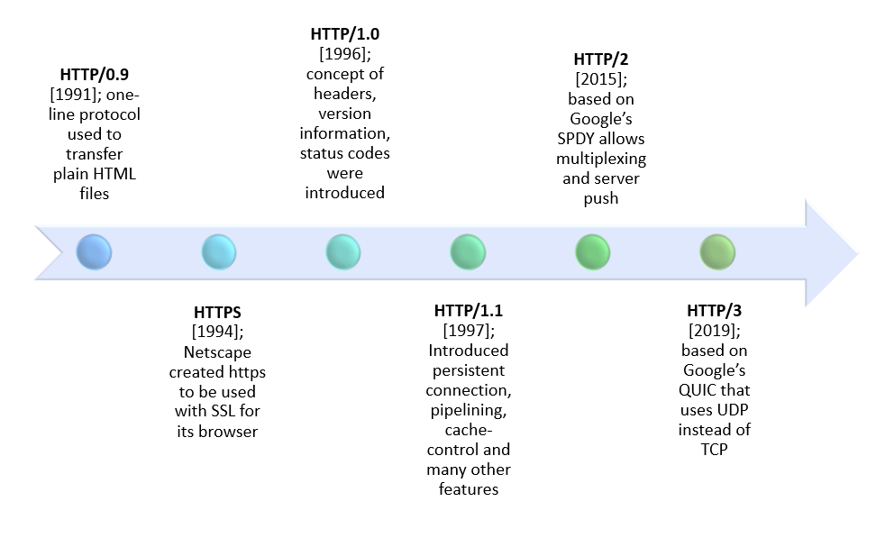

The Evolution of HTTP
In 1989, Tim Berners-Lee invented the World Wide Web, while he was working at CERN. Initially developed as a protocol to facilitate information-sharing among scientists around the world, HTTP has evolved into a fundamental block in modern day technology. HTTP is an application layer protocol that allows web browsers and servers to communicate with each other across the Internet. The World Wide Web relied on four key components: HTML, URL, HTTP, and web browsers.
HTTP/0.9
The first version of HTTP, HTTP/0.9, was released in 1991. This version was very simple, and requests consisted of a single line and used GET, followed by the path to the resource which was usually a file.This version of HTTP did not support headers, status codes, or any other request methods.
HTTP/1.0
In 1996, HTTP/1.0 was released, which added support for message headers, image transmission, status codes and other types of files that were able to be transmitted due to Content-Type headers. The introduction of HTTP/1.0 allowed for more complex transmissions between clients and servers, since different types of files could be transmitted instead of just plain text files. HTTP/1.0 established the one request per TCP connection, which meant that the browser and server opened a new TCP connnection per item requested such as images, and scripts. This method was inefficient, and caused delays in loading web pages, since the browser had to wait for each request to be completed before sending in the next request.
HTTP/1.1
Due to the inefficiencies and latencies of HTTP/1.0, HTTP/1.1 was released in 1997, which added support for persistent connections, reducing the stress on resources within the network. This improved the latencies that users were facing in HTTP/1.0, since HTTP/1.1 since users no longer had to wait for responses to be returned and instead were able to send in the next requests without waiting for the previous request to be answered. HTTP/1.1 also introduced HOST headers, which informs a web server what domain a client is trying to reach, allowing for IP addresses to reach multiple domains. HTTP/1.1 also added support for chunked transfer encoding, which allows for the transmission of data in smaller chunks, improving the efficiency of data transfer.
HTTP/2
Regardless, HTTP/1.1 still had some inefficiencies and kept being revised over the years. In 2015, HTTP/2 was released, which broke down data into binary frames, making the information much easier for machines to process compared to HTTP 1.1 plain text. HTTP/2 introduced multiplexing, which cuts the request and responses into smaller bits and transmitts them over a singular TCP connection, allowing for multiple requests and responses to be sent at the same time. HTTP/2 also introduced HPACK compression, which sends a tiny index number of changes from the previous request saving valuable network resources. Server push was also introduced in HTTP/2, which allows servers to send resources to clients before they are requested, greatly improving the speed of web pages.
HTTP/3
HTTP/2 was a great improvement over HTTP/1.1, however it still heavily relied on TCP, meaning that packets could get lost in transit to their destination. This led to the introduction of HTTP/3, which was released in 2022. HTTP/3 uses QUIC, which is a transport layer protocol that is built on top of UDP instead of tcp. Quick UDP Internet Connections (QUIC) is designed to be faster and more efficient than TCP, and it includes features such as unidirectional streams called "Encoder" and "Decoder" streams. Encoder streams are unidirectional channels where the sender sends instructions to the reciever on how to compress HTTP headers. Decoder streams are unidirectional channels where the reciever acknowledges the compression instructions sent by the sender. Therefore, if a packet gets lost in one stream, it just affects the one stream and the other streams are unharmed. Addionally, faster connections occur under HTTP/3 due to QUIC, combining TCP and TLS connections, connecting in one trip compared to HTTP/2 where the TCP handshake goes first and then TLS encryption handshake. HTTP/3 also includes improved security features, such as encryption and authentication, which help to protect against attacks and ensure the integrity of data transmitted over the web.

HTTPS
Hyper Transfer Protocol Secure (HTTPS) was created in the 1990s, through the use of Secure Sockets Layer(SSL). HTTPS is just like HTTP, but adds SSL and Transport Layer Security(TLS) protocols to establish communication. With HTTP, data is sent across as plain text, leaving senstive information open for interception from unwanted users. However, with SSL, data is sent across HTTP encrypted, therefore making it difficult for malicious users to read the information. In 2014, Google adapted HTTPS into their search URLS, which prompted other technology companies to do the same. Google marked HTTP as "Not Secure" to warn users about inputting senstive data. Today, HTTPS is considered the standard protocl for secure communication on the internet.